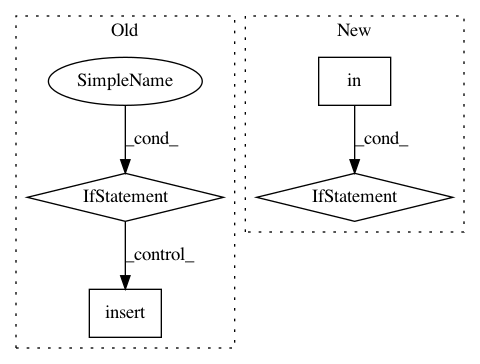

f31b7ad689b1435e76744af4ff443607643a37fd,studio/experiment.py,,create_experiment,#Any#Any#Any#Any#Any#Any#Any#Any#,116
Before Change
packages.insert(0, pkg._key + "-gpu==" + pkg._version)
packages.insert(0, pkg._key + "==" + pkg._version)
elif pkg._key == "tensorflow-gpu" or pkg._key == "tf-nightly-gpu":
packages.insert(0, pkg._key[:-4] + "==" + pkg._version)
else:
packages.append(pkg._key + "==" + pkg._version)
return Experiment(
After Change
if pkg.startswith("-e git+"):
// git package
packages.append(pkg)
elif "==" in pkg:
// pypi package
key = re.search(r"^.*?(?=\=\=)", pkg).group(0)
version = re.search(r"(?<=\=\=).*\Z", pkg).group(0)
In pattern: SUPERPATTERN
Frequency: 3
Non-data size: 4
Instances
Project Name: studioml/studio
Commit Name: f31b7ad689b1435e76744af4ff443607643a37fd
Time: 2017-12-28
Author: peter.zhokhov@sentient.ai
File Name: studio/experiment.py
Class Name:
Method Name: create_experiment
Project Name: mil-tokyo/webdnn
Commit Name: 4bdd5d8384866805199900edc6f948d144c5fb08
Time: 2017-11-13
Author: y.kikura@gmail.com
File Name: src/graph_transpiler/webdnn/optimizer/sub_rules/remove_no_effect_operator.py
Class Name: RemoveReinterpretAxis
Method Name: optimize_operator
Project Name: cmu-db/ottertune
Commit Name: 21971e673fabe25d3e7da6712f80222760516113
Time: 2020-02-26
Author: bohanzhang95@gmail.com
File Name: server/website/website/tasks/async_tasks.py
Class Name:
Method Name: clean_metric_data